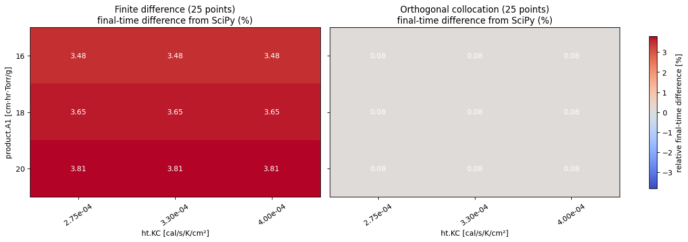
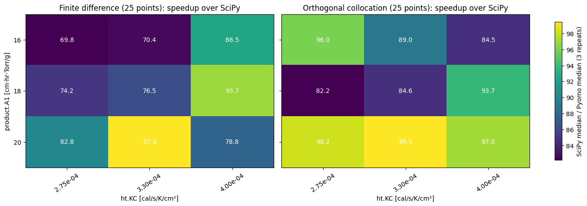
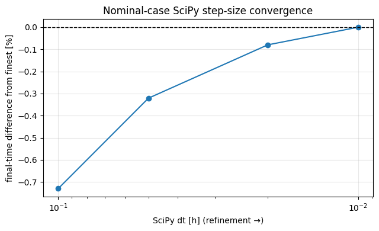
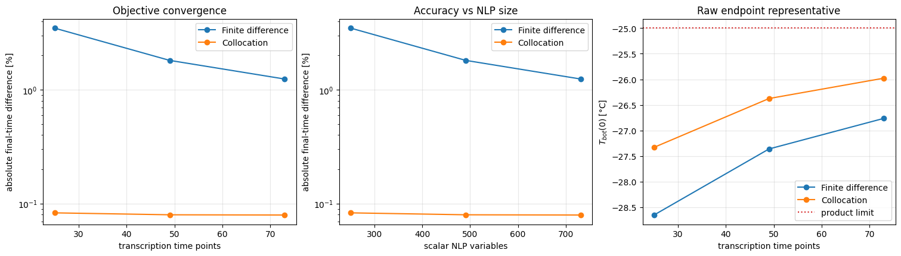
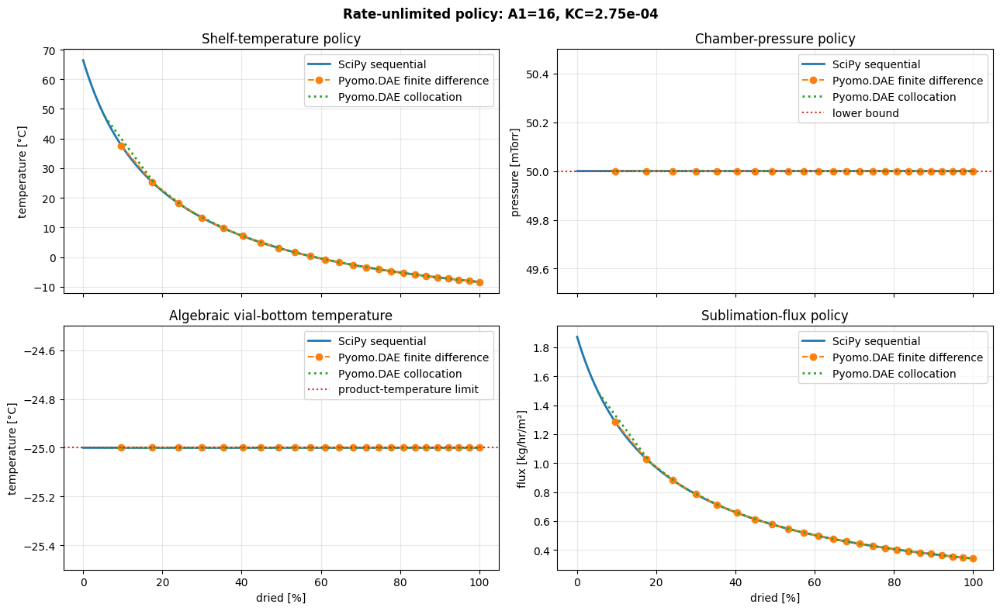
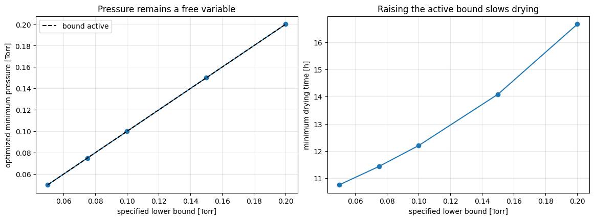
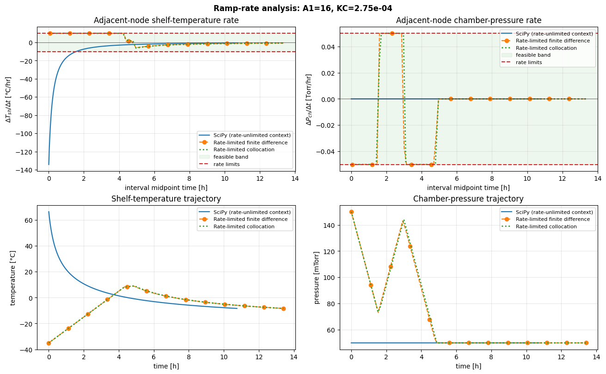
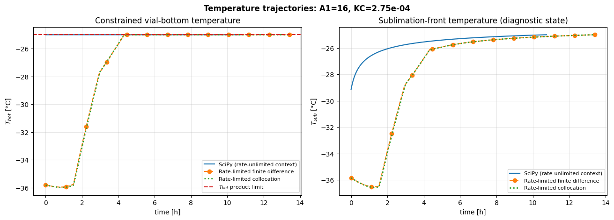
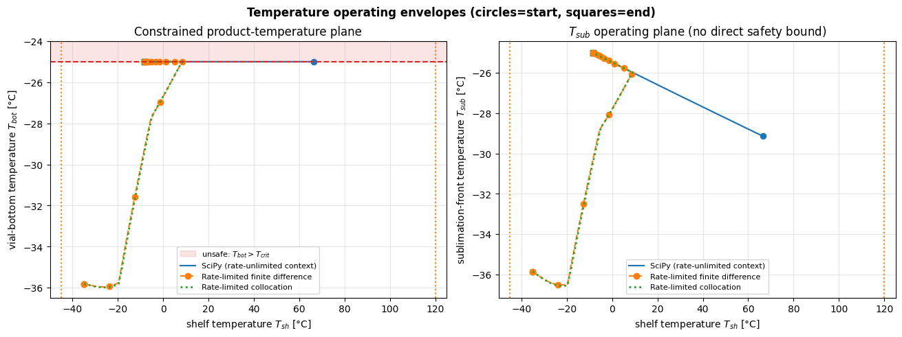

Compare the current SciPy and Pyomo joint-control optimizers
This tutorial reproduces the historical \(A_1 \times K_C\) experiment in which both shelf temperature and chamber pressure are released. It uses the physics and APIs on current main, comparing the legacy sequential SciPy optimizer with an equivalent rate-unlimited, free-final-time Pyomo.DAE model transcribed by backward finite differences and LAGRANGE-RADAU orthogonal collocation. The headline comparison gives both DAE transformations the same number of transcription points.
The notebook then asks a separate implementability question. It fixes realistic initial control values and limits pressure and shelf-temperature movement between transcription nodes. Keeping the exact reproduction and this extension separate prevents actuator assumptions from silently changing the historical objective comparison.
What is held equivalent?
| SciPy workflow | Rate-unlimited Pyomo.DAE workflow |
|---|---|
| Sequentially minimize \(P_{ch}-P_{sub}\), maximizing rate at each cake state | Simultaneously minimize free final drying time |
| Advance the one cake-length ODE explicitly | Transcribe the same ODE with Pyomo.DAE |
| Stop at 100% dried | Constrain the terminal state to 100% dried |
| Optimize shelf temperature from -45 to 120 °C and chamber pressure from 50 to 500 mTorr | Optimize the same two controls with the same bounds |
| No actuator-rate constraints | No actuator-rate constraints |
With one monotone differential state and no intertemporal control penalty, maximizing sublimation rate at every state minimizes completion time. The comparison therefore uses final drying time as the common process objective. Finite differences and collocation are alternative algebraic reformulations of the same DAE, not different physical models.
This exact legacy formulation returns an idealized operating policy indexed by cake state. It should not be read as a physically implementable control trajectory when a control moves immediately to a bound. The rate-limited extension later in the notebook is a different optimization problem and is reported separately.
Optional solver setup
Run this notebook from the repository root after installing the optional stack:
```bash python -m pip install -e ".[dev,pyomo]" idaes get-extensions --extra petsc export PATH="\(HOME/.idaes/bin:\)PATH" jupyter lab docs/examples/current_main_joint_optimizer_comparison.ipynb ```
A conda-forge IPOPT installation can be used instead. The full default grid takes several minutes because every SciPy reference advances with the configured fine time step and timing is repeated.
# Papermill parameters: CI overrides these with a small smoke case.
a1_values = [16.0, 18.0, 20.0]
kc_values = [2.75e-4, 3.30e-4, 4.00e-4]
scipy_dt = 0.01
scipy_dt_values = [0.1, 0.05, 0.02, 0.01]
point_budget = 25
ncp = 3
final_dried_fraction = 1.0
timing_repeats = 3
sensitivity_point_budgets = [25, 49, 73]
pressure_lower_bound_values_torr = [0.05, 0.075, 0.10, 0.15, 0.20]
implementability_point_budget = 97
initial_pressure_torr = 0.15
initial_shelf_temperature_c = -35.0
pressure_ramp_rate_torr_hr = 0.05
shelf_temperature_ramp_rate_c_hr = 10.0
constraint_tolerance = 1.0e-4
scipy_temperature_tolerance_c = 0.5
save_results = False
results_dir = "benchmarks/results/current_main_joint_comparison"
import json
import platform
import subprocess
from importlib.metadata import version
from pathlib import Path
import matplotlib
import matplotlib.pyplot as plt
import numpy as np
import pyomo
import scipy
from examples.current_main_joint_optimizer_comparison import (
comparison_inputs,
matched_nfe_for_point_budget,
run_case_comparison,
run_discretization_sensitivity,
run_pyomo_dae,
run_scipy_reference,
trajectory_constraint_diagnostics,
)
try:
git_revision = subprocess.check_output(
["git", "rev-parse", "HEAD"], text=True
).strip()
except (OSError, subprocess.CalledProcessError):
git_revision = "unavailable"
environment = {
"git_revision": git_revision,
"python": platform.python_version(),
"platform": platform.platform(),
"lyopronto": version("lyopronto"),
"numpy": np.__version__,
"scipy": scipy.__version__,
"pyomo": pyomo.__version__,
"matplotlib": matplotlib.__version__,
}
environment
{'git_revision': 'cd6c6b90413cd6a6eaed66d5a387aaa2d32bc98e',
'python': '3.13.5',
'platform': 'Linux-6.6.114.1-microsoft-standard-WSL2-x86_64-with-glibc2.39',
'lyopronto': '1.1.0',
'numpy': '2.5.0',
'scipy': '1.17.1',
'pyomo': '6.9.5',
'matplotlib': '3.10.9'}
Experimental protocol
For each \((A_1, K_C)\) pair, the helper performs three equivalent runs:
- Run `opt_Pch_Tsh.dry` to 100% dried using the configured sequential step.
- Solve the free-final-time joint Pyomo.DAE model with `dae.finite_difference` and the `BACKWARD` scheme.
- Solve the same model with `dae.collocation` and the `LAGRANGE-RADAU` scheme.
- Require every workflow to reach the same configured terminal dried fraction.
- Compare the final-time objectives directly and report median end-to-end wall times.
The default timing is a cold-start, workflow-level comparison: model construction and IPOPT solve are included, while an untimed warm-up removes one-time import and executable startup costs. Collocation uses `nfe * ncp + 1` time points, whereas finite differences use `nfe + 1`. Separate `nfe` values give both DAE transformations exactly `point_budget` time points. Scalar-variable and active-constraint counts are also reported because equal point counts are only a first approximation to equal NLP size.
# Pay one-time Pyomo/IPOPT initialization before collecting timings.
for method in ("finite_difference", "collocation"):
warmup = run_pyomo_dae(
a1_values[0], kc_values[0], discretization=method, nfe=4, ncp=ncp
)
assert warmup.success, (method, warmup.solver_status, warmup.termination_condition)
finite_difference_nfe, collocation_nfe = matched_nfe_for_point_budget(
point_budget, ncp
)
print(
f"Matched DAE budget: {point_budget} points "
f"(FD nfe={finite_difference_nfe}; "
f"collocation nfe={collocation_nfe}, ncp={ncp})"
)
comparisons = []
for a1 in a1_values:
for kc in kc_values:
print(f"Running A1={a1:g}, KC={kc:.2e} ...")
comparisons.append(
run_case_comparison(
a1,
kc,
scipy_dt=scipy_dt,
finite_difference_nfe=finite_difference_nfe,
collocation_nfe=collocation_nfe,
ncp=ncp,
final_dried_fraction=final_dried_fraction,
timing_repeats=timing_repeats,
)
)
case_by_parameter = {(case.a1, case.kc): case for case in comparisons}
print(f"Completed {len(comparisons)} grid cases.")
header = (
f"{'A1':>5} {'KC':>10} {'method':>20} {'time [h]':>10} "
f"{'gap [%]':>10} {'wall [s]':>11} {'speedup':>10} "
f"{'points/steps':>12} {'variables':>10} {'constraints':>12} "
f"{'iterations':>11}"
)
print(header)
print("-" * len(header))
for case in comparisons:
print(
f"{case.a1:5.1f} {case.kc:10.2e} {'SciPy':>20} "
f"{case.scipy_objective_time_hr:10.4f} {0.0:10.3f} "
f"{case.scipy_wall_median_s:11.3f} {1.0:10.1f} "
f"{case.scipy_trajectory.shape[0]:12d} "
f"{'-':>10} {'-':>12} {'-':>11}"
)
rows = [
(
"finite difference",
case.finite_difference_objective_time_hr,
case.finite_difference_objective_gap_percent,
case.finite_difference_wall_median_s,
case.finite_difference_speedup,
case.finite_difference_trajectory,
case.finite_difference_n_variables,
case.finite_difference_n_constraints,
case.finite_difference_solver_iterations,
),
(
"collocation",
case.collocation_objective_time_hr,
case.collocation_objective_gap_percent,
case.collocation_wall_median_s,
case.collocation_speedup,
case.collocation_trajectory,
case.collocation_n_variables,
case.collocation_n_constraints,
case.collocation_solver_iterations,
),
]
for method, objective, gap, wall, speedup, table, nvars, ncons, iterations in rows:
iteration_text = "-" if iterations is None else str(iterations)
print(
f"{case.a1:5.1f} {case.kc:10.2e} {method:>20} "
f"{objective:10.4f} {gap:10.3f} {wall:11.3f} "
f"{speedup:10.1f} {table.shape[0]:12d} {nvars:10d} "
f"{ncons:12d} {iteration_text:>11}"
)
A1 KC method time [h] gap [%] wall [s] speedup points/steps variables constraints iterations
-----------------------------------------------------------------------------------------------------------------------------------
16.0 2.75e-04 SciPy 10.7518 0.000 4.138 1.0 1077 - - -
16.0 2.75e-04 finite difference 11.1255 3.475 0.059 69.8 25 251 253 -
16.0 2.75e-04 collocation 10.7608 0.083 0.043 96.0 25 251 253 -
16.0 3.30e-04 SciPy 10.7518 0.000 4.032 1.0 1077 - - -
16.0 3.30e-04 finite difference 11.1255 3.475 0.057 70.4 25 251 253 -
16.0 3.30e-04 collocation 10.7608 0.083 0.045 89.0 25 251 253 -
16.0 4.00e-04 SciPy 10.7518 0.000 3.944 1.0 1077 - - -
16.0 4.00e-04 finite difference 11.1255 3.475 0.046 86.5 25 251 253 -
16.0 4.00e-04 collocation 10.7608 0.083 0.047 84.5 25 251 253 -
18.0 2.75e-04 SciPy 11.7563 0.000 4.480 1.0 1177 - - -
18.0 2.75e-04 finite difference 12.1857 3.652 0.060 74.2 25 251 253 -
18.0 2.75e-04 collocation 11.7660 0.082 0.055 82.2 25 251 253 -
18.0 3.30e-04 SciPy 11.7563 0.000 4.325 1.0 1177 - - -
18.0 3.30e-04 finite difference 12.1857 3.652 0.057 76.5 25 251 253 -
18.0 3.30e-04 collocation 11.7660 0.082 0.051 84.6 25 251 253 -
18.0 4.00e-04 SciPy 11.7563 0.000 4.198 1.0 1177 - - -
18.0 4.00e-04 finite difference 12.1857 3.652 0.045 93.7 25 251 253 -
18.0 4.00e-04 collocation 11.7660 0.082 0.045 93.7 25 251 253 -
20.0 2.75e-04 SciPy 12.7606 0.000 4.749 1.0 1278 - - -
20.0 2.75e-04 finite difference 13.2462 3.806 0.057 82.8 25 251 253 -
20.0 2.75e-04 collocation 12.7710 0.081 0.048 98.2 25 251 253 -
20.0 3.30e-04 SciPy 12.7606 0.000 4.608 1.0 1278 - - -
20.0 3.30e-04 finite difference 13.2462 3.806 0.047 97.8 25 251 253 -
20.0 3.30e-04 collocation 12.7710 0.081 0.046 99.5 25 251 253 -
20.0 4.00e-04 SciPy 12.7606 0.000 4.510 1.0 1278 - - -
20.0 4.00e-04 finite difference 13.2462 3.806 0.057 78.8 25 251 253 -
20.0 4.00e-04 collocation 12.7710 0.081 0.046 97.0 25 251 253 -
Validate before interpreting
An optimal solver termination is not sufficient by itself. The experiment independently checks every exported SciPy and Pyomo table for completion, finite seven-column output, both control bounds, the product-temperature limit, and equipment capability. The SciPy product-temperature check allows 0.5 °C for SLSQP and sequential-step tolerances; the simultaneous Pyomo tables use the tighter model residual tolerance. Legacy output pressure remains in mTorr and percent dried remains on a 0–100 scale.
diagnostic_rows = []
for case in comparisons:
data = comparison_inputs(case.a1, case.kc)
method_tables = [
("SciPy", case.scipy_trajectory, scipy_temperature_tolerance_c),
(
"finite difference",
case.finite_difference_trajectory,
constraint_tolerance,
),
(
"collocation",
case.collocation_trajectory,
constraint_tolerance,
),
]
assert case.finite_difference_trajectory.shape == (point_budget, 7)
assert case.collocation_trajectory.shape == (point_budget, 7)
for method, table, temperature_tolerance in method_tables:
diagnostics = trajectory_constraint_diagnostics(table, data)
assert table.shape[1] == 7
assert diagnostics["final_dried_percent"] >= (
100.0 * final_dried_fraction - 1.0e-3
)
assert (
diagnostics["product_temperature_violation_c"]
<= temperature_tolerance
)
assert diagnostics["pressure_lower_violation_mtorr"] <= 1.0e-3
assert diagnostics["pressure_upper_violation_mtorr"] <= 1.0e-3
assert diagnostics["shelf_lower_violation_c"] <= constraint_tolerance
assert diagnostics["shelf_upper_violation_c"] <= constraint_tolerance
assert diagnostics["minimum_equipment_margin_kg_hr"] >= -1.0e-6
diagnostic_rows.append(
{
"A1": case.a1,
"KC": case.kc,
"method": method,
**diagnostics,
}
)
assert case.finite_difference_max_constraint_violation <= constraint_tolerance
assert case.collocation_max_constraint_violation <= constraint_tolerance
print(
f"{'method':>20} {'max Tbot violation [°C]':>25} "
f"{'min capacity margin [kg/hr]':>29} {'mean Pmin fraction':>20}"
)
for method in ("SciPy", "finite difference", "collocation"):
rows = [row for row in diagnostic_rows if row["method"] == method]
print(
f"{method:>20} "
f"{max(row['product_temperature_violation_c'] for row in rows):25.3e} "
f"{min(row['minimum_equipment_margin_kg_hr'] for row in rows):29.3e} "
f"{np.mean([row['pressure_lower_bound_fraction'] for row in rows]):20.3f}"
)
method max Tbot violation [°C] min capacity margin [kg/hr] mean Pmin fraction
SciPy 1.012e-10 1.678e-01 1.000
finite difference 2.498e-07 2.294e-01 1.000
collocation 2.499e-07 2.084e-01 1.000
def matrix_for(attribute):
return np.array(
[
[
getattr(
case_by_parameter[(float(a1), float(kc))],
attribute,
)
for kc in kc_values
]
for a1 in a1_values
],
dtype=float,
)
def annotate_heatmap(ax, values, fmt):
threshold = 0.55 * np.nanmax(np.abs(values))
for row in range(values.shape[0]):
for col in range(values.shape[1]):
color = "white" if abs(values[row, col]) > threshold else "black"
ax.text(
col,
row,
format(values[row, col], fmt),
ha="center",
va="center",
color=color,
)
objective_gap_matrices = [
(
"Finite difference",
matrix_for("finite_difference_objective_gap_percent"),
),
(
"Orthogonal collocation",
matrix_for("collocation_objective_gap_percent"),
),
]
limit = max(
1.0,
max(float(np.max(np.abs(values))) for _, values in objective_gap_matrices),
)
fig, axes = plt.subplots(
1, 2, figsize=(13, 4.5), sharey=True, layout="constrained"
)
for ax, (label, values) in zip(axes, objective_gap_matrices):
image = ax.imshow(
values,
cmap="coolwarm",
vmin=-limit,
vmax=limit,
aspect="auto",
)
ax.set(
title=(
f"{label} ({point_budget} points)\n"
"final-time difference from SciPy (%)"
),
xlabel="ht.KC [cal/s/K/cm²]",
)
ax.set_xticks(
range(len(kc_values)),
[f"{value:.2e}" for value in kc_values],
rotation=35,
)
ax.set_yticks(
range(len(a1_values)),
[f"{value:g}" for value in a1_values],
)
annotate_heatmap(ax, values, ".2f")
axes[0].set_ylabel("product.A1 [cm·hr·Torr/g]")
fig.colorbar(
image,
ax=axes,
label="relative final-time difference [%]",
shrink=0.9,
)
plt.show()

speedup_matrices = [
("Finite difference", matrix_for("finite_difference_speedup")),
("Orthogonal collocation", matrix_for("collocation_speedup")),
]
fig, axes = plt.subplots(
1, 2, figsize=(13, 4.5), sharey=True, layout="constrained"
)
for ax, (label, values) in zip(axes, speedup_matrices):
image = ax.imshow(values, cmap="viridis", aspect="auto")
ax.set(
title=f"{label} ({point_budget} points): speedup over SciPy",
xlabel="ht.KC [cal/s/K/cm²]",
)
ax.set_xticks(
range(len(kc_values)),
[f"{value:.2e}" for value in kc_values],
rotation=35,
)
ax.set_yticks(
range(len(a1_values)),
[f"{value:g}" for value in a1_values],
)
annotate_heatmap(ax, values, ".1f")
axes[0].set_ylabel("product.A1 [cm·hr·Torr/g]")
fig.colorbar(
image,
ax=axes,
label=f"SciPy median / Pyomo median ({timing_repeats} repeats)",
shrink=0.9,
)
plt.show()

The speedup values are machine- and environment-dependent. They scale roughly with \(1/\mathtt{scipy\_dt}\) because opt_Pch_Tsh.dry performs one SLSQP solve per sequential step, while changing scipy_dt does not change the DAE workload. SciPy step count and simultaneous NLP point count are therefore both reported but are not equivalent measures of problem size. Objective gaps, convergence trends, and physical acceptance checks are the portable numerical results.
The nearly constant 50 mTorr pressure is not evidence that pressure was accidentally fixed. Pressure is a free variable, but the optimizer drives it to its lower bound while the product-temperature constraint is active and equipment capacity has positive margin. The pressure-bound sensitivity below verifies this active-set explanation directly.
SciPy step-size convergence
SciPy is a sequential optimizer/integrator, not a simultaneous transcription, so its number of steps should not be matched to the DAE point budget. Instead, this study quantifies the final-time reference's sensitivity to `dt`. The configured grid reference must be the finest value listed here. Differences comparable to the change between the two finest steps are within the SciPy reference resolution.
nominal = case_by_parameter[
(float(a1_values[0]), float(kc_values[0]))
]
scipy_dt_values = sorted(
{float(value) for value in scipy_dt_values},
reverse=True,
)
assert all(value > 0.0 for value in scipy_dt_values)
assert np.isclose(scipy_dt, min(scipy_dt_values))
scipy_convergence_rows = []
for dt in scipy_dt_values:
if np.isclose(dt, scipy_dt):
objective_time_hr = nominal.scipy_objective_time_hr
wall_time_s = nominal.scipy_wall_median_s
n_steps = nominal.scipy_trajectory.shape[0]
else:
run = run_scipy_reference(nominal.a1, nominal.kc, dt=dt)
assert run.success
objective_time_hr = run.objective_time_hr
wall_time_s = run.wall_time_s
n_steps = run.n_time_points
scipy_convergence_rows.append(
{
"dt": dt,
"objective_time_hr": objective_time_hr,
"wall_time_s": wall_time_s,
"n_steps": n_steps,
}
)
finest_time = scipy_convergence_rows[-1]["objective_time_hr"]
for row in scipy_convergence_rows:
row["gap_from_finest_percent"] = (
100.0
* (row["objective_time_hr"] - finest_time)
/ finest_time
)
print(
f"{'dt [h]':>10} {'steps':>8} {'time [h]':>12} "
f"{'gap from finest [%]':>21} {'wall [s]':>10}"
)
for row in scipy_convergence_rows:
print(
f"{row['dt']:10.4f} {row['n_steps']:8d} "
f"{row['objective_time_hr']:12.5f} "
f"{row['gap_from_finest_percent']:21.4f} "
f"{row['wall_time_s']:10.3f}"
)
fig, ax = plt.subplots(figsize=(6.5, 4.0))
ax.plot(
[row["dt"] for row in scipy_convergence_rows],
[row["gap_from_finest_percent"] for row in scipy_convergence_rows],
marker="o",
)
ax.axhline(0.0, color="black", linewidth=1.0, linestyle="--")
ax.set_xscale("log")
ax.invert_xaxis()
ax.set(
xlabel="SciPy dt [h] (refinement →)",
ylabel="final-time difference from finest [%]",
title="Nominal-case SciPy step-size convergence",
)
ax.grid(alpha=0.3)
fig.tight_layout()
plt.show()
dt [h] steps time [h] gap from finest [%] wall [s]
0.1000 108 10.67333 -0.7303 0.419
0.0500 216 10.71734 -0.3210 0.840
0.0200 539 10.74327 -0.0797 2.062
0.0100 1077 10.75185 0.0000 4.138

DAE transcription sensitivity
The two transformations have different approximation orders and therefore should not be compared at the same nfe. Each pair below uses exactly the same number of transcription points: finite differences use point_budget - 1 elements, while collocation uses (point_budget - 1) / ncp. The plots show accuracy against point count, scalar NLP variables, and end-to-end wall time.
The table also reports the first positive physical time and the raw \(T_{bot}(0)\) value. In the rate-unlimited DAE, the isolated control at \(t=0\) is tied to the first positive transcription point to select a unique endpoint representative. On a coarse mesh that representative belongs to a comparatively distant process state, so evaluating the algebraic temperature equations at zero cake length produces a visible endpoint offset. Its shrinkage under mesh refinement identifies it as a transcription/representative artifact rather than thermal physics.
sensitivity_rows = run_discretization_sensitivity(
nominal.a1,
nominal.kc,
nominal.scipy_trajectory,
point_budgets=sensitivity_point_budgets,
ncp=ncp,
final_dried_fraction=final_dried_fraction,
)
print(
f"{'method':>20} {'nfe':>6} {'points':>7} "
f"{'variables':>10} {'constraints':>12} {'t1 [h]':>9} "
f"{'Tbot(0) [°C]':>14} {'objective gap [%]':>18} "
f"{'wall [s]':>10} {'max residual':>14}"
)
for row in sensitivity_rows:
print(
f"{row['method']:>20} {row['nfe']:6d} "
f"{row['n_time_points']:7d} {row['n_variables']:10d} "
f"{row['n_constraints']:12d} {row['first_positive_time_hr']:9.4f} "
f"{row['initial_product_temperature_c']:14.3f} "
f"{row['objective_gap_percent']:18.3f} "
f"{row['wall_time_s']:10.3f} "
f"{row['max_constraint_violation']:14.3e}"
)
fig, axes = plt.subplots(
1, 3, figsize=(15, 4.2), layout="constrained"
)
for method, label in [
("finite_difference", "Finite difference"),
("collocation", "Collocation"),
]:
rows = [row for row in sensitivity_rows if row["method"] == method]
error = [
max(abs(row["objective_gap_percent"]), 1.0e-6)
for row in rows
]
axes[0].plot(
[row["n_time_points"] for row in rows],
error,
marker="o",
label=label,
)
axes[1].plot(
[row["n_variables"] for row in rows],
error,
marker="o",
label=label,
)
axes[2].plot(
[row["n_time_points"] for row in rows],
[row["initial_product_temperature_c"] for row in rows],
marker="o",
label=label,
)
axes[0].set(
xlabel="transcription time points",
ylabel="absolute final-time difference [%]",
title="Objective convergence",
)
axes[1].set(
xlabel="scalar NLP variables",
ylabel="absolute final-time difference [%]",
title="Accuracy vs NLP size",
)
axes[2].axhline(-25.0, color="tab:red", linestyle=":", label="product limit")
axes[2].set(
xlabel="transcription time points",
ylabel="$T_{bot}(0)$ [°C]",
title="Raw endpoint representative",
)
for ax in axes[:2]:
ax.set_yscale("log")
for ax in axes:
ax.grid(alpha=0.3)
ax.legend()
plt.show()
method nfe points variables constraints t1 [h] Tbot(0) [°C] objective gap [%] wall [s] max residual
finite_difference 24 25 251 253 0.4636 -28.652 3.475 0.063 2.498e-07
collocation 8 25 251 253 0.2086 -27.330 0.083 0.042 1.278e-07
finite_difference 48 49 491 493 0.2281 -27.361 1.811 0.088 2.496e-07
collocation 16 49 491 493 0.1043 -26.376 0.080 0.083 8.077e-09
finite_difference 72 73 731 733 0.1512 -26.763 1.243 0.077 2.494e-07
collocation 24 73 731 733 0.0695 -25.977 0.079 0.084 1.342e-07

Rate-unlimited operating policy
All three results retain the legacy seven-column output shape. Because neither exact-comparison workflow includes actuator dynamics, the clearest common independent variable is drying progress, not clock time. The following plot therefore presents the controls and algebraic state as an idealized policy against percent dried.
For each DAE curve only, the isolated zero-measure endpoint is omitted from this policy visualization. The raw endpoint remains in the numerical results and in all acceptance checks above; it is not smoothed or overwritten. This avoids drawing a straight time-domain segment from an endpoint representative to a distant first transcription point and mistaking that segment for physical actuator or thermal dynamics. The pressure and constrained-temperature axes use physical tolerances rather than magnifying solver residuals of order \(10^{-5}\) mTorr or \(10^{-7}\,^{\circ}\)C.
scipy_table = nominal.scipy_trajectory
finite_difference_table = nominal.finite_difference_trajectory
collocation_table = nominal.collocation_trajectory
policy_tables = [
(scipy_table, "SciPy sequential", {"linewidth": 2.0}),
(
finite_difference_table[1:],
"Pyomo.DAE finite difference",
{"linestyle": "--", "marker": "o"},
),
(
collocation_table[1:],
"Pyomo.DAE collocation",
{"linestyle": ":", "linewidth": 2.0},
),
]
fig, axes = plt.subplots(2, 2, figsize=(13, 8), sharex=True)
for table, label, style in policy_tables:
progress = table[:, 6]
axes[0, 0].plot(progress, table[:, 3], label=label, **style)
axes[0, 1].plot(progress, table[:, 4], label=label, **style)
axes[1, 0].plot(progress, table[:, 2], label=label, **style)
axes[1, 1].plot(progress, table[:, 5], label=label, **style)
axes[0, 0].set(title="Shelf-temperature policy", ylabel="temperature [°C]")
axes[0, 1].set(title="Chamber-pressure policy", ylabel="pressure [mTorr]")
axes[0, 1].axhline(50.0, color="tab:red", linestyle=":", label="lower bound")
axes[0, 1].set_ylim(49.5, 50.5)
axes[0, 1].ticklabel_format(axis="y", style="plain", useOffset=False)
axes[1, 0].set(
title="Algebraic vial-bottom temperature",
xlabel="dried [%]",
ylabel="temperature [°C]",
)
axes[1, 0].axhline(
-25.0,
color="tab:red",
linestyle=":",
label="product-temperature limit",
)
axes[1, 0].set_ylim(-25.5, -24.5)
axes[1, 0].ticklabel_format(axis="y", style="plain", useOffset=False)
axes[1, 1].set(
title="Sublimation-flux policy",
xlabel="dried [%]",
ylabel="flux [kg/hr/m²]",
)
for ax in axes.flat:
ax.grid(alpha=0.3)
ax.legend()
fig.suptitle(
f"Rate-unlimited policy: A1={nominal.a1:g}, KC={nominal.kc:.2e}",
fontweight="bold",
)
fig.tight_layout()
plt.show()

Why is optimized pressure constant?
Pressure is released in every run above. A constant profile can still be the optimum when a bound is active over the whole state path. To distinguish that result from an accidentally fixed variable, the next diagnostic re-solves the nominal collocation model while moving only the allowed pressure lower bound. If pressure is genuinely free and lower-bound limited, the realized minimum pressure should follow the new bound and completion time should worsen monotonically as that bound rises.
pressure_bound_rows = []
for lower_bound in pressure_lower_bound_values_torr:
run = run_pyomo_dae(
nominal.a1,
nominal.kc,
discretization="collocation",
nfe=collocation_nfe,
ncp=ncp,
final_dried_fraction=final_dried_fraction,
pressure_bounds=(float(lower_bound), 0.5),
)
assert run.success, (run.solver_status, run.termination_condition)
realized_minimum = float(np.min(run.trajectory[:, 4]) / 1000.0)
assert np.isclose(realized_minimum, lower_bound, atol=1.0e-4)
pressure_bound_rows.append(
{
"lower_bound_torr": float(lower_bound),
"realized_minimum_torr": realized_minimum,
"objective_time_hr": run.objective_time_hr,
}
)
objective_times = [row["objective_time_hr"] for row in pressure_bound_rows]
assert np.all(np.diff(objective_times) >= -constraint_tolerance)
print(f"{'P lower bound [Torr]':>22} {'realized min [Torr]':>22} {'time [h]':>12}")
for row in pressure_bound_rows:
print(
f"{row['lower_bound_torr']:22.3f} "
f"{row['realized_minimum_torr']:22.3f} "
f"{row['objective_time_hr']:12.4f}"
)
fig, axes = plt.subplots(1, 2, figsize=(11.5, 4.2), layout="constrained")
axes[0].plot(
[row["lower_bound_torr"] for row in pressure_bound_rows],
[row["realized_minimum_torr"] for row in pressure_bound_rows],
marker="o",
)
bound_range = [
min(pressure_lower_bound_values_torr),
max(pressure_lower_bound_values_torr),
]
axes[0].plot(
bound_range,
bound_range,
color="black",
linestyle="--",
label="bound active",
)
axes[0].set(
xlabel="specified lower bound [Torr]",
ylabel="optimized minimum pressure [Torr]",
title="Pressure remains a free variable",
)
axes[0].legend()
axes[1].plot(
[row["lower_bound_torr"] for row in pressure_bound_rows],
objective_times,
marker="o",
)
axes[1].set(
xlabel="specified lower bound [Torr]",
ylabel="minimum drying time [h]",
title="Raising the active bound slows drying",
)
for ax in axes:
ax.grid(alpha=0.3)
plt.show()
P lower bound [Torr] realized min [Torr] time [h]
0.050 0.050 10.7608
0.075 0.075 11.4365
0.100 0.100 12.2024
0.150 0.150 14.0877
0.200 0.200 16.6591

Separate rate-limited implementability extension
The exact comparison above deliberately has no actuator memory. Earlier trajectory studies used limits of 10 °C/hr for shelf temperature and 0.05 Torr/hr for chamber pressure; this extension now applies those same nodal limits. It also anchors the problem at \(P_{ch}(0)=150\) mTorr and \(T_{sh}(0)=-35\,^{\circ}\)C. A rate bound without an initial value limits movement but does not define a physical starting control.
Both DAE transformations receive the same 97-point budget and the same constraints. The current sequential SciPy optimizer cannot impose constraints linking controls at successive process states, so its rate-unlimited result is shown below only as context—not as an equivalent member of this extension.
The imposed constraints bound adjacent-node secant rates, \(\Delta u/\Delta t\), in optimized physical time. They prevent transcription-node jumps but do not add shelf, vial, or product thermal capacitance; all reported temperatures still come from quasi-steady algebraic balances.
implementability_fd_nfe, implementability_collocation_nfe = (
matched_nfe_for_point_budget(implementability_point_budget, ncp)
)
implementability_runs = {}
for method, nfe in (
("finite_difference", implementability_fd_nfe),
("collocation", implementability_collocation_nfe),
):
run = run_pyomo_dae(
nominal.a1,
nominal.kc,
discretization=method,
nfe=nfe,
ncp=ncp,
final_dried_fraction=final_dried_fraction,
initial_pressure=initial_pressure_torr,
initial_shelf_temperature=initial_shelf_temperature_c,
pressure_ramp_rate=pressure_ramp_rate_torr_hr,
shelf_temperature_ramp_rate=shelf_temperature_ramp_rate_c_hr,
)
assert run.success, (method, run.solver_status, run.termination_condition)
table = run.trajectory
diagnostics = trajectory_constraint_diagnostics(
table, comparison_inputs(nominal.a1, nominal.kc)
)
time_steps = np.diff(table[:, 0])
rate_midpoints = 0.5 * (table[:-1, 0] + table[1:, 0])
pressure_rates = np.diff(table[:, 4] / 1000.0) / time_steps
shelf_rates = np.diff(table[:, 3]) / time_steps
observed_pressure_rate = float(np.max(np.abs(pressure_rates)))
observed_shelf_rate = float(np.max(np.abs(shelf_rates)))
pressure_active_fraction = float(
np.mean(
np.isclose(
np.abs(pressure_rates),
pressure_ramp_rate_torr_hr,
atol=1.0e-4,
)
)
)
shelf_active_fraction = float(
np.mean(
np.isclose(
np.abs(shelf_rates),
shelf_temperature_ramp_rate_c_hr,
atol=1.0e-3,
)
)
)
assert np.isclose(table[0, 4] / 1000.0, initial_pressure_torr, atol=1.0e-6)
assert np.isclose(table[0, 3], initial_shelf_temperature_c, atol=1.0e-6)
assert observed_pressure_rate <= pressure_ramp_rate_torr_hr + 1.0e-4
assert observed_shelf_rate <= shelf_temperature_ramp_rate_c_hr + 1.0e-4
assert diagnostics["product_temperature_violation_c"] <= constraint_tolerance
assert diagnostics["minimum_equipment_margin_kg_hr"] >= -1.0e-6
implementability_runs[method] = {
"run": run,
"diagnostics": diagnostics,
"rate_midpoint_time_hr": rate_midpoints,
"pressure_rates_torr_hr": pressure_rates,
"shelf_rates_c_hr": shelf_rates,
"maximum_pressure_rate_torr_hr": observed_pressure_rate,
"maximum_shelf_rate_c_hr": observed_shelf_rate,
"pressure_rate_active_fraction": pressure_active_fraction,
"shelf_rate_active_fraction": shelf_active_fraction,
}
print(
f"{'method':>20} {'points':>8} {'time [h]':>12} "
f"{'P range [mTorr]':>22} {'max |dP/dt|':>13} {'P active [%]':>13} "
f"{'max |dTsh/dt|':>15} {'Tsh active [%]':>15}"
)
for method, result in implementability_runs.items():
run = result["run"]
table = run.trajectory
pressure_range = f"{np.min(table[:, 4]):.1f}–{np.max(table[:, 4]):.1f}"
print(
f"{method:>20} {run.n_time_points:8d} {run.objective_time_hr:12.4f} "
f"{pressure_range:>22} "
f"{result['maximum_pressure_rate_torr_hr']:13.3f} "
f"{100.0 * result['pressure_rate_active_fraction']:13.1f} "
f"{result['maximum_shelf_rate_c_hr']:15.3f} "
f"{100.0 * result['shelf_rate_active_fraction']:15.1f}"
)
method points time [h] P range [mTorr] max |dP/dt| P active [%] max |dTsh/dt| Tsh active [%]
finite_difference 97 13.4181 50.0–150.0 0.050 34.4 10.000 32.3
collocation 97 13.4207 50.0–150.0 0.050 35.4 10.000 32.3
rate_analysis_series = [
(
scipy_table,
"SciPy (rate-unlimited context)",
"tab:blue",
{"linewidth": 1.6},
),
(
implementability_runs["finite_difference"]["run"].trajectory,
"Rate-limited finite difference",
"tab:orange",
{"linestyle": "--", "marker": "o", "markevery": 8},
),
(
implementability_runs["collocation"]["run"].trajectory,
"Rate-limited collocation",
"tab:green",
{"linestyle": ":", "linewidth": 2.0},
),
]
fig, axes = plt.subplots(2, 2, figsize=(13, 8), layout="constrained")
for table, label, color, style in rate_analysis_series:
time_steps = np.diff(table[:, 0])
midpoints = 0.5 * (table[:-1, 0] + table[1:, 0])
shelf_rates = np.diff(table[:, 3]) / time_steps
pressure_rates = np.diff(table[:, 4] / 1000.0) / time_steps
axes[0, 0].plot(midpoints, shelf_rates, label=label, color=color, **style)
axes[0, 1].plot(midpoints, pressure_rates, label=label, color=color, **style)
axes[1, 0].plot(table[:, 0], table[:, 3], label=label, color=color, **style)
axes[1, 1].plot(table[:, 0], table[:, 4], label=label, color=color, **style)
rate_panels = (
(axes[0, 0], shelf_temperature_ramp_rate_c_hr, r"$\Delta T_{sh}/\Delta t$ [°C/hr]"),
(axes[0, 1], pressure_ramp_rate_torr_hr, r"$\Delta P_{ch}/\Delta t$ [Torr/hr]"),
)
for ax, limit, ylabel in rate_panels:
ax.axhspan(-limit, limit, color="tab:green", alpha=0.08, label="feasible band")
ax.axhline(limit, color="tab:red", linestyle="--", label="rate limits")
ax.axhline(-limit, color="tab:red", linestyle="--")
ax.axhline(0.0, color="black", linewidth=0.8, alpha=0.5)
ax.set(xlabel="interval midpoint time [h]", ylabel=ylabel)
axes[0, 0].set_title("Adjacent-node shelf-temperature rate")
axes[0, 1].set_title("Adjacent-node chamber-pressure rate")
axes[1, 0].set(
title="Shelf-temperature trajectory",
xlabel="time [h]",
ylabel="temperature [°C]",
)
axes[1, 1].set(
title="Chamber-pressure trajectory",
xlabel="time [h]",
ylabel="pressure [mTorr]",
)
for ax in axes.flat:
ax.grid(alpha=0.3)
ax.legend(fontsize=8)
fig.suptitle(
f"Ramp-rate analysis: A1={nominal.a1:g}, KC={nominal.kc:.2e}",
fontweight="bold",
)
plt.show()

Temperature trajectories and operating planes
The ramp plot already shows \(T_{sh}(t)\). The next figures complete the temperature view with \(T_{bot}(t)\) and \(T_{sub}(t)\), then project each trajectory into temperature operating planes.
The distinction matters: the implemented product-safety constraint is \(T_{bot} \leq T_{crit}=-25\,^{\circ}\)C. Sublimation-front temperature \(T_{sub}\) is an algebraic state used in vapor pressure and mass transfer, but it is not compared directly with T_pr_crit. Consequently, the \(T_{bot}\) plane carries the unsafe region and the \(T_{sub}\) plane is diagnostic only.
critical_temperature = comparison_inputs(nominal.a1, nominal.kc)["product"][
"T_pr_crit"
]
fig, axes = plt.subplots(1, 2, figsize=(13, 4.6), layout="constrained")
for table, label, color, style in rate_analysis_series:
axes[0].plot(table[:, 0], table[:, 2], label=label, color=color, **style)
axes[1].plot(table[:, 0], table[:, 1], label=label, color=color, **style)
axes[0].axhline(
critical_temperature,
color="tab:red",
linestyle="--",
label="$T_{bot}$ product limit",
)
axes[0].set(
title="Constrained vial-bottom temperature",
xlabel="time [h]",
ylabel="$T_{bot}$ [°C]",
)
axes[1].set(
title="Sublimation-front temperature (diagnostic state)",
xlabel="time [h]",
ylabel="$T_{sub}$ [°C]",
)
for ax in axes:
ax.grid(alpha=0.3)
ax.legend(fontsize=8)
fig.suptitle(
f"Temperature trajectories: A1={nominal.a1:g}, KC={nominal.kc:.2e}",
fontweight="bold",
)
plt.show()

data = comparison_inputs(nominal.a1, nominal.kc)
temperature_floor = min(
float(np.min(table[:, 2])) for table, *_ in rate_analysis_series
) - 0.5
temperature_ceiling = critical_temperature + 1.0
fig, axes = plt.subplots(1, 2, figsize=(13, 4.8), layout="constrained")
axes[0].axhspan(
critical_temperature,
temperature_ceiling,
color="tab:red",
alpha=0.12,
label="unsafe: $T_{bot}>T_{crit}$",
)
for table, label, color, style in rate_analysis_series:
axes[0].plot(table[:, 3], table[:, 2], label=label, color=color, **style)
axes[1].plot(table[:, 3], table[:, 1], label=label, color=color, **style)
for ax, y_column in ((axes[0], 2), (axes[1], 1)):
ax.scatter(table[0, 3], table[0, y_column], color=color, marker="o", s=35)
ax.scatter(table[-1, 3], table[-1, y_column], color=color, marker="s", s=35)
for ax in axes:
ax.axvline(data["tshelf"]["min"], color="tab:orange", linestyle=":")
ax.axvline(data["tshelf"]["max"], color="tab:orange", linestyle=":")
ax.set_xlim(data["tshelf"]["min"] - 5.0, data["tshelf"]["max"] + 5.0)
ax.set_xlabel("shelf temperature $T_{sh}$ [°C]")
ax.grid(alpha=0.3)
ax.legend(fontsize=8)
axes[0].axhline(critical_temperature, color="tab:red", linestyle="--")
axes[0].set(
ylim=(temperature_floor, temperature_ceiling),
ylabel="vial-bottom temperature $T_{bot}$ [°C]",
title="Constrained product-temperature plane",
)
axes[1].set(
ylabel="sublimation-front temperature $T_{sub}$ [°C]",
title="$T_{sub}$ operating plane (no direct safety bound)",
)
fig.suptitle(
"Temperature operating envelopes (circles=start, squares=end)",
fontweight="bold",
)
plt.show()

The rate limits are active over part of both optimized trajectories, so they are not cosmetic: they change the feasible controls and increase the nominal completion time relative to the rate-unlimited optimum. At the same time, finite difference and collocation now agree closely on completion time and on the resolved control and temperature paths.
The time-domain and operating-plane plots also explain the earlier apparent temperature “peaks.” Shelf temperature, vial-bottom temperature, and sublimation-front temperature are now shown as distinct quantities. Only \(T_{bot}\) is constrained by T_pr_crit; shading a \(T_{sub}\) plot against that limit would test the wrong state. Any fast \(T_{bot}\) response that remains is the response of this quasi-steady algebraic model, not a prediction of thermal inertia. Modeling thermal lag requires additional differential states and independently validated capacitance parameters.
Optionally save a compact reproduction record
Generated experiment outputs belong under benchmarks/results/, which is ignored by default. The JSON file contains environment, scalar summaries, pressure-bound sensitivity, and rate-limit assumptions; the compressed NumPy archive retains the exact-comparison and rate-limited trajectories used for the plots.
if save_results:
destination = Path(results_dir)
destination.mkdir(parents=True, exist_ok=True)
summaries = [
{
"A1": case.a1,
"KC": case.kc,
"scipy_objective_time_hr": case.scipy_objective_time_hr,
"finite_difference_objective_time_hr": (
case.finite_difference_objective_time_hr
),
"collocation_objective_time_hr": (
case.collocation_objective_time_hr
),
"finite_difference_objective_gap_percent": (
case.finite_difference_objective_gap_percent
),
"collocation_objective_gap_percent": (
case.collocation_objective_gap_percent
),
"scipy_wall_times_s": list(case.scipy_wall_times_s),
"finite_difference_wall_times_s": list(
case.finite_difference_wall_times_s
),
"collocation_wall_times_s": list(case.collocation_wall_times_s),
"finite_difference_speedup": case.finite_difference_speedup,
"collocation_speedup": case.collocation_speedup,
"finite_difference_n_variables": case.finite_difference_n_variables,
"finite_difference_n_constraints": case.finite_difference_n_constraints,
"collocation_n_variables": case.collocation_n_variables,
"collocation_n_constraints": case.collocation_n_constraints,
"finite_difference_max_constraint_violation": (
case.finite_difference_max_constraint_violation
),
"collocation_max_constraint_violation": (
case.collocation_max_constraint_violation
),
}
for case in comparisons
]
payload = {
"environment": environment,
"parameters": {
"scipy_dt": scipy_dt,
"scipy_dt_values": scipy_dt_values,
"point_budget": point_budget,
"finite_difference_nfe": finite_difference_nfe,
"collocation_nfe": collocation_nfe,
"ncp": ncp,
"final_dried_fraction": final_dried_fraction,
"timing_repeats": timing_repeats,
"implementability_point_budget": implementability_point_budget,
"initial_pressure_torr": initial_pressure_torr,
"initial_shelf_temperature_c": initial_shelf_temperature_c,
"pressure_ramp_rate_torr_hr": pressure_ramp_rate_torr_hr,
"shelf_temperature_ramp_rate_c_hr": shelf_temperature_ramp_rate_c_hr,
},
"cases": summaries,
"trajectory_diagnostics": diagnostic_rows,
"scipy_convergence": scipy_convergence_rows,
"discretization_sensitivity": sensitivity_rows,
"pressure_bound_sensitivity": pressure_bound_rows,
}
(destination / "summary.json").write_text(
json.dumps(payload, indent=2) + "\n"
)
trajectories = {}
for case in comparisons:
key = (
f"A1_{case.a1:g}_KC_{case.kc:.2e}"
.replace(".", "p")
.replace("-", "m")
)
trajectories[f"{key}_scipy"] = case.scipy_trajectory
trajectories[f"{key}_finite_difference"] = case.finite_difference_trajectory
trajectories[f"{key}_collocation"] = case.collocation_trajectory
for method, result in implementability_runs.items():
trajectories[f"nominal_rate_limited_{method}"] = result["run"].trajectory
np.savez_compressed(destination / "trajectories.npz", **trajectories)
print(f"Saved reproduction record under {destination}")
else:
print("Set save_results=True to write JSON and NPZ outputs.")
Interpretation boundaries
This notebook reproduces the scientific question with current code rather than preserving historical outputs as golden numbers. Agreement in the exact comparison is judged using the common final-time objective, SciPy-step and DAE-mesh convergence, independently evaluated trajectory constraints, and current model residuals together. Exact speedups are machine-dependent.
In the committed run, 25-point collocation is within the resolution of the finest sequential SciPy reference, while backward Euler shows the expected first-order refinement trend. The raw DAE endpoint-temperature offset shrinks as the first positive transcription time approaches zero. It is therefore not evidence of a modeled thermal excursion.
The repeated columns across \(K_C\) and constant pressure in the exact comparison come from a transparent active set: pressure follows its lower bound, the product-temperature limit controls sublimation, shelf-temperature bounds remain inactive, and equipment capacity retains positive margin. Re-solving with successively higher pressure lower bounds makes the realized pressure follow each new bound and increases minimum drying time, confirming that pressure was free rather than fixed.
The rate-limited extension demonstrates that initial control values and rate constraints are necessary for an implementability study. Its 10 °C/hr and 0.05 Torr/hr limits become active and produce resolved, non-jumping nodal controls; this is a different problem from the rate-unlimited SciPy comparison. The temperature plots enforce and shade the actual \(T_{bot}\) safety condition while retaining \(T_{sub}\) as a separate diagnostic state.
Even this extension retains quasi-steady algebraic temperatures. A physically predictive thermal transient would require new differential states and validated shelf, vial, and product capacitance parameters; nodal ramp limits alone cannot supply that missing physics.